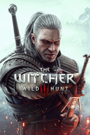

THE WITCHER 3
Detalles
|  | |
| Tiempo de juego | No Jugado |
| Última actividad | Nunca |
| Añadido | 11/5/2024 22:37:13 |
| Modificado | 11/6/2024 22:30:18 |
| Estado de finalización | No Jugado |
| Librería | Playnite |
| Fuente | 4TB TANK |
| Plataforma | PC (Windows) |
| Fecha de lanzamiento | 5/18/2015 |
| Puntuación de la Comunidad | 96 |
| Puntuación de la Crítica | 93 |
| Puntuación de usuario | |
| Género | Rol |
| Desarrollador | CD PROJEKT RED |
| Editor | CD PROJEKT RED |
| Característica | Cloud Saves Compat. Parcial Con Mando Cromos De Logros De Préstamo Familiar Remote Play En Tableta Remote Play En TV Un Jugador Workshop |
| Enlaces | Punto de encuentro Discusiones Guías Noticias Página de la tienda PCGamingWiki Logros Workshop |
| Tag | Acción Ambientales Aventura Buena trama Desnudez Fantasía Fantasía oscura Finales múltiples Gran banda sonora Las elecciones importan Magia Medievales Mundo abierto Oscuros Para adultos Rol Rol de acción Sandbox Tercera persona Un jugador |
Descripción
Uno de los RPGs más aclamados de todos los tiempos, ahora listo para una nueva generación.

Eres Geralt de Rivia, cazador de monstruos. En un continente devastado por la guerra e infestado de criaturas, tu misión es encontrar a Ciri, la niña de la profecía, un arma viviente que puede alterar el mundo tal y como lo conocemos.
Actualizado a la versión más reciente, The Witcher 3: Wild Hunt incluye contenido publicado para el juego, junto con nuevos añadidos: un modo foto integrado, objetos inspirados en la serie de Netflix The Witcher —espadas, armaduras y atuendos alternativos— ¡y muchas cosas más!

¡Contempla el siniestro mundo de fantasía del continente como nunca antes! Esta edición de The Witcher 3: Wild Hunt ha sido mejorada con numerosos efectos visuales y mejoras técnicas, incluidos un nivel de detalle perfeccionado, una gran variedad de mods creados y recién desarrollados por la comunidad, trazado de rayos en tiempo real y mucho más, todo ello implementado pensando en la potencia de los PC modernos.

Adiestrados desde su infancia y mutados para obtener habilidades, fuerza y reflejos sobrehumanos, los brujos sirven como contrapeso al mundo infestado de monstruos en el que viven.
• Destruye a tus enemigos de formas espantosas como cazador de monstruos profesional, armado con una gran variedad de armas mejorables, pociones de mutación y magia de combate.
• Da caza a una amplia gama de monstruos exóticos: desde bestias salvajes que merodean por los pasos de montaña, hasta astutos depredadores sobrenaturales que acechan en las sombras de los callejones de ciudades densamente pobladas.
• Invierte tus recompensas en mejorar tus armas y comprar armaduras personalizadas, o gástatelas en carreras de caballos, juegos de cartas, peleas a puñetazos y otros placeres que te ofrece la vida.

Creado para vivir aventuras interminables, el enorme mundo abierto de The Witcher establece un nuevo estándar en cuanto a tamaño, profundidad y complejidad.
• Recorre un mundo abierto fantástico: explora ruinas olvidadas, cuevas y naufragios, comercia con mercaderes y herreros enanos en las ciudades, y caza en llanuras, montañas y mares.
• Trata con generales traicioneros, brujas retorcidas y miembros de la realeza corruptos para prestar servicios siniestros y peligrosos.
• Toma decisiones que van más allá del bien y el mal, y afronta sus trascendentales consecuencias.

Acepta el contrato más importante de tu vida: buscar a la niña de la profecía, la clave para salvar o destruir el mundo.
• En tiempos de guerra, encuentra a la niña de la profecía, un arma viviente profetizada por antiguas leyendas élficas.
• Lucha contra fieros gobernantes, espíritus de la naturaleza e incluso contra una amenaza de otra dimensión, todos dispuestos a controlar este mundo.
• Define tu destino en un mundo que tal vez no merezca la pena salvar.